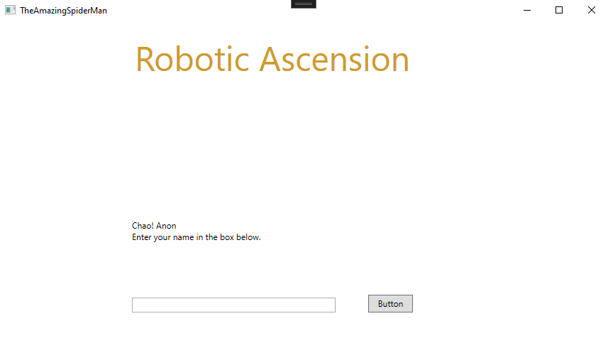
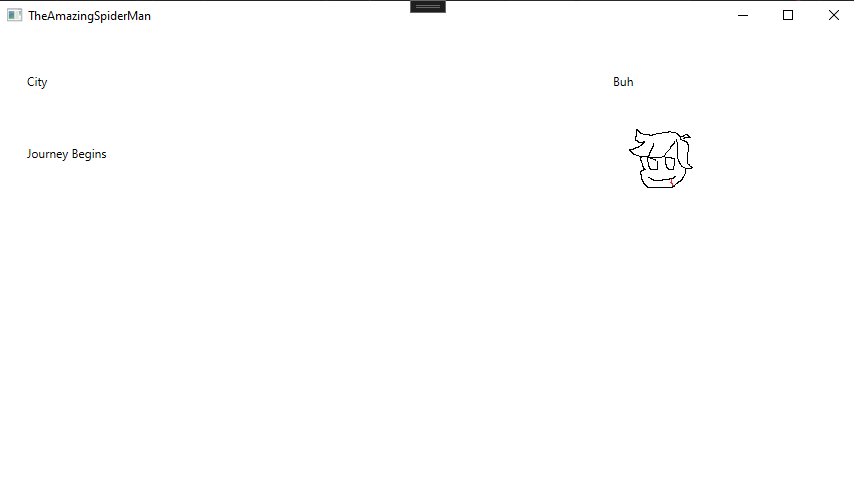
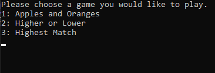
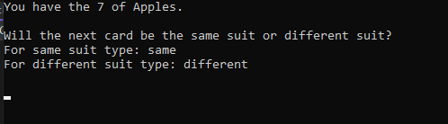
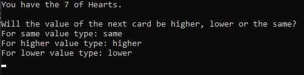
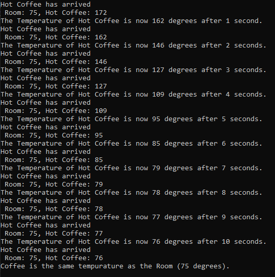

This is currently a placeholder for a short proof of concept for a drone collector game I have in mind.

Home Screen.

Game Screen.
Card Games
This is a card game program that allows you to play two different card games! (Yes I know there are three options, but at this current point in time, Highest Match is not done properly) You can choose to play Apples and Oranges or Higher or Lower. The games continue until you gain 10 points and win!

Home Screen. This is where the player can choose what type of game they want to play by typping in the number that corresponds with the game. Doing so will access the class for that specific game and you'll be able to play.

In this game, as well as all other games in here, a deck of cards is generated and another deck is used to shuffle all of those to create a sense of randomness. Then the player can answer using the cases by typing in the keywords such as "same" or "different" in order to gain points and win.

Similar to the game above, this time the player is guessing if the value of the next card will be higher or lower than the card they drew using a traditional 52 card deck. Although this game also needed the additional third option of the value potentially being the same, thus making it slihgtly more difficult than Apples and Oranges.
Coffee Temperature
This program is a simulation to show how a Hot or Iced Coffee's temperature is adjusted over time to meet the room temperature that it is currently sitting at.

A Hot Coffee cooling down to room temp. This is able to work by setting up a value for both temperatures and then using Newton's Law of Cooling to change the temperature of the Coffee.